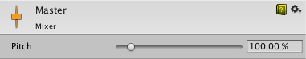
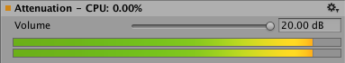
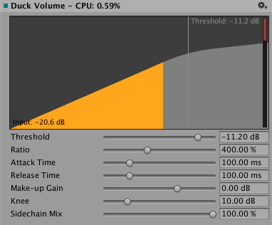
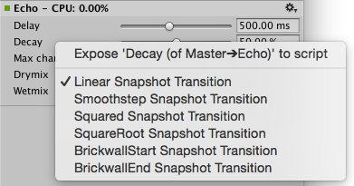
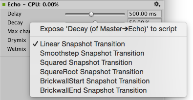
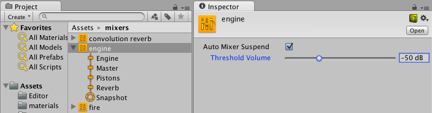

AudioGroup Inspector
Selecting an AudioGroup in the AudioGroup Hierarchy, the AudioGroup View or the Project window (as a sub-asset) will show the inspector for that AudioGroup.
The inspector for the AudioGroup consists of a number of elements:
Inspector Header
At the top of the AudioGroup Inspector there is the name of the AudioGroup, along with with the gear dropdown menu common to all Object Inspectors.

The gear menu contains the following functionality:
- 'Copy all effect settings to all snapshots' - This lets you to copy all of the effect parameter, volume and pitch settings of this AudioGroup to all of the other snapshots present within the AudioMixer. This lets you to quickly make all snapshots 'like this one' for this AudioGroup.
- 'Toggle CPU usage display' - This toggles CPU performance information for all of the effects present in the AudioGroup inspector. This is used to get an idea of which effects within your DSP setup are consuming the most resources.
Edit in Playmode

When in Playmode within Unity, the Inspector for an AudioGroup includes a button at the top called "Edit in Playmode". By default, the parameter values of an AudioMixer are not editable in Playmode and are fully controlled by the current snapshot within the game.
Edit in Playmode allows you to override the snapshot system and start making edits to the current snapshot directly during playmode. This is a great way to mix and master a game while playing it in realtime.
Pitch Slider
At the top of all AudioGroup Inspectors, there is a slider that defines the pitch of playback through that AudioGroup. To change the pitch, either use the slider or enter the pitch manually into the text field to the right.

Attenuation Unit
Every AudioGroup within an AudioMixer has exactly 1 Attenuation Unit.
The Attenuation Unit is where you can apply attenuation / gain to the audio signal passing through the AudioGroup. The attenuation is computed and applied to the signal 'at the unit' (not combined with other attenuation settings and applied at the voice source). This allows very complex and interesting setups to be created when combined with Sends / Receives and non linear DSP effects. Attenuation can be applied to -80dB (silence) and gain can be applied to +20dB.

Every Attenuation Unit has a VU meter in the inspector. This meter shows the audio signal levels at that point in the signal chain (just after attenuation is applied). This means that if you have DSP effects or Receives after the Attenuation Unit, the metering information seen in the AudioGroup strip for that AudioGroup will be different to the metering information at the Attenuation Unit. This is a great way to debug the signal chain of an AudioGroup by dragging the Attenuation Unit up and down the processing chain to see the metering at different points.
The VU meter shows both RMS and peak hold values.
- To move the Attenuation Unit (or any effect) up or down the signal chain, click on the Unit's header and drag up or down the inspector to reposition it.
- To change the attenuation setting, move the slider above the metering or enter in a value in the text box.
Effect Units
Effect Units are general DSP effects that modify the audio signal being played through the AudioGroup, for example Highpass or Reverb. Effect Units can also process side-chain signal information that is sent to it from a Send Unit. The interface for each Effect Unit is different, but for the most part expose a collection of parameters that you can modify to change how the effect is applied to the signal. For example, a Parameter EQ effect has 3 parameters that modify how the signal is processed:

Unity comes with a collection of in-built effects that you can use within an AudioGroup. There is also the ability to create custom DSP effect plugins that can be used within an AudioMixer.
- To add an effect to the AudioGroup, click the 'Add Effect' button at the bottom of the AudioGroup Inspector.
To change the ordering of the effect within the AudioGroup, left click the effect header and drag up or down to place it in a different position.
To remove the effect from the AudioGroup, right click on the effect header and select 'Remove this effect'.
Send Units
Sends allow you to diverge the audio signal flow and send a potentially attenuated copy of the signal to be used as a side-chain within another Effect Unit, for example, a side-chain compressor. You can insert Sends anywhere in the signal chain, allowing divergence of signal at any point.

Initially, when Sends are added to an AudioGroup, they do not send to anything, and the Send Level is set to 80dB. To send to another Effect Unit, you must already have an Effect Unit that can accept side-chain signals in the AudioMixer somewhere. Once the destination Effect Unit has been selected, the user needs to increase the Send Level to send signal to the destination.
- To add a Send to an AudioGroup, click the 'Add Effect' button at the bottom of the AudioGroup Inspector and choose 'Send'.
- To connect a Send to another Effect Unit (capable of receiving signal), choose the destination from the drop down menu in the Send Unit Inspector.
- Set the level of signal sent to the destination with "Send Level"
Receive Units
Receives are the signal sinks of Sends, they simply take the audio signal that is sent to them from Sends and mix it with the current signal passing through their AudioGroup. There are no parameters to a Receive.
Note that if you Solo a Receive unit, this will make the sound stop playing. This is by design.
Duck Volume Units
Duck Volume Units allow you to create side-chain compression from signal sent from Sends. Duck Volume is a great way to control the attenuation of a signal based on audio being played somewhere else in the AudioMixer.

Duck Volume Units can be added like any other Effect Unit and must have signal sent to them from at least one Send to be useful.
Common Options
Each unit within the AudioGroup Inspector has a number of common features.
Gear Options
- Allow Wet Mixing - Toggling this option creates a dry channel around the effect. The slider that appears when this is enabled dictates what percentage of the signal is passed into the wet/dry components. Enabling this increases memory usage and CPU overhead. This is only available on certain units.
- Bypass - Toggling this will bypass the Effect Unit completely, effectively disabling it in the signal chain.
- Copy Effect Settings to all Snapshots - Selecting this will copy all the parameter values within this Effect Unit to all the other Snapshots in the AudioMixer. This is useful when adding a new Effect Unit, making changes to that Effect Unit and wanting those settings to be the same across all Snapshots.
- Add Effect Before - Allows the insertion of an Effect Unit before the current Effect Unit in the AudioGroup. Select the desired effect from the menu shown.
- Add Effect After - Allows the insertion of an Effect Unit after the current Effect Unit in the AudioGroup. Select the desired effect from the menu shown.
- Remove This Effect - Remove this Effect Unit completely from the AudioMixer. Attenuation Units cannot be removed from AudioGroups.
Wet Mixing
Allowing Wet Mixing on a DSP effect allows you to decide how much of the audio signal that is to enter the effect actually is processed by the effect. Enabling Wet Mixing effectively creates a dry channel around the effect. You can then click on the effect slot and drag left and right to increase or decrease the percentage of audio signal that is passed through the DSP effect unit. The rest of the signal is passed through the dry channel. The following diagram illustrates this concept:
Wet mixing is good for when a user wants to control the influence an effect has on the mix and preserve a percentage of the original signal.
Exposed Parameters
Exposed Parameters allow you to bypass the Snapshot system of an AudioMixer and set the value of any parameter within an AudioMixer from script. When an Exposed Parameter is set via script, that parameter is locked to that value and will not change as the the game transitions Snapshots.
Exposing a parameter with an AudioMixer is done in the AudioGroup Inspector. For any parameter shown in the Inspector (including Pitch, Volume, Send Level and Wet Level), you can right click on the name of the Parameter and choose 'Expose X to script'.

Once a parameter is exposed it will show up in the Exposed Parameter drop down in the top right corner of the AudioMixer Window. Clicking on this drop down will reveal all the Exposed Parameters in the AudioMixer.

- To rename an Exposed Parameter, right click on the name of the Exposed Parameter and click 'Rename'. This name will be how you reference the parameter from the AudioMixer API. *To delete an Exposed Parameter, right click on the name of the Exposed Parameter and click 'Delete'.
Transition Overrides
When transitioning between Snapshots, by default all transitions are done with linear interpolation from the beginning to target values. In some cases this transition behaviour is not desired however, for example when it it preferable to brick-wall the change at the start or end of the transition.
All of the parameters available within the AudioMixer can have their transition behaviour changed. Transition behaviours are defined per-Snapshot, with the target Snapshot defining the transition behaviour.
To set the transition override for a particular parameter for the current Snapshot, right click on the parameter name and select the required transition type.

AudioMixer Inspector
The audio mixer asset itself has an inspector that allows specifying the overall activation/suspense behavior of the mixer. Being assets, audio mixers are basically activated when any audio source plays into the mixer and will stay active as long as there is such a driver supplying audio data to the mixer. Since mixers can also be activated by the audio preview button in the scene view, the activation behavior is different from that of scene-objects such as MonoBehaviors. Thus, a mixer may be active (and therefore consuming CPU) even in stop mode.
To avoid running out of CPU resources in a project that contains a large number of mixers that are not supposed to be running all at the same time (say, because specific levels use certain specialized mixers), the audio mixers have functionality built-in to put themselves into suspended mode in which all processing stops. To do this in a natural way that doesn’t lead to audible artefacts such as clicks or missing rever/echo tails each mixer uses the following strategy:
As long as any audio source is playing into this mixer or the mixer is receiving audio data from other sub-mixers the mixer will keep itself active. After the last sound source has finished playing, the mixer will wait for a second and then continually use loudness-measurement at its own output do decide if it should suspend itself. This is needed because reverb and echo tails can potentially decay very slowly. The loudness threshold at which the mixer suspends itself is determined by enabling Auto Mixer Suspend and setting the Threshold Volume parameter on the mixer asset’s inspector which is shown then the mixer asset is selected in the project browser (not when selecting a sub-asset like a mixer group or snapshot). The value of -80 dB is chosen as the default and matches the lowest value of the faders in the mixer. In practice it is often possible to set it to a significantly larger value to get quicker deactivation and avoid intermediate CPU spikes that could cause stutter.
